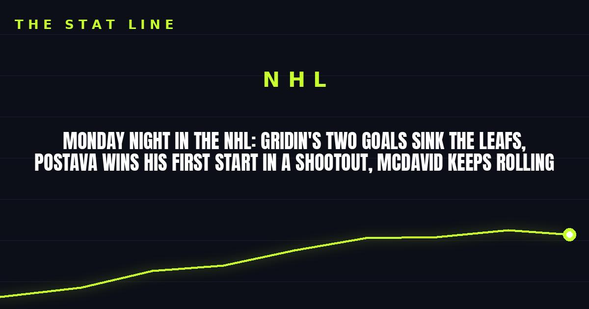

Monday Night in the NHL: Gridin's Two Goals Sink the Leafs, Postava Wins His First Start in a Shootout, McDavid Keeps Rolling
Matvei Gridin scored twice and added an assist as Calgary beat Toronto 5-2, Detroit rookie Michal Postava won his first NHL start by stopping McDavid, Draisaitl and Nugent-Hopkins in the shootout, and the Kings ended the Rangers' home winning streak.

Disclosure: this post contains affiliate links. I earn a commission on qualifying purchases.
Flames 5, Maple Leafs 2
Matvei Gridin opened the scoring, then scored again on the power play 25 seconds into the second period — the eventual game-winner — and added an assist as Calgary won its fourth straight and snapped Toronto's four-game winning streak. Joel Farabee and Martin Pospisil added empty-net goals to close it out.
Red Wings 4, Oilers 3 (SO)
Michal Postava, a 24-year-old undrafted netminder from Czechia, made 25 saves in his first career NHL start — then stopped all three shootout tries from Connor McDavid, Leon Draisaitl and Ryan Nugent-Hopkins. Lucas Raymond scored the shootout winner, and Dylan Larkin forced overtime with a 6-on-5 goal with 1:17 left in the third.
McDavid still had an assist, extending his season-opening points streak to 12 games with an NHL-best 34 points — a team record for most points before November 1 — and matching the longest season-opening assist streak in NHL history, alongside Sebastian Aho, Ken Linseman and Wayne Gretzky.
Kings 6, Rangers 3
Drew Doughty had a goal and two assists and Artemi Panarin scored the game-winner against his former team as Los Angeles snapped the Rangers' season-opening six-game home winning streak. New Rangers goalie James Reimer allowed three goals on eight shots in his debut for his ninth team, tying Cam Talbot's NHL record for most teams by a goalie.
Why it matters
• Gridin's two-goal night headlined a fourth straight Flames win — Calgary is rolling.
• Postava's first-start shootout win, staring down the three best shooters in the sport, is the night's best story.
• McDavid's 34 points before November 1 is already a franchise record — and the season is barely two weeks old.
Sources: NHL roundup: Wings' Michal Postava wins first start, tops Oilers in SO (Reuters); NHL scores last night: latest finals and highlights (PuckFeed); Raymond scores in shootout to lift Red Wings over Oilers (theScore/AP).
Gear up: Fanatics